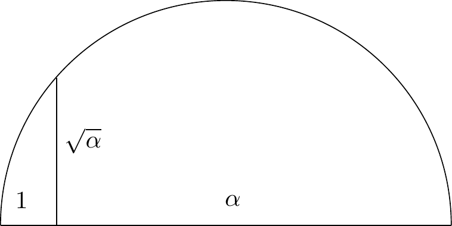

Episodi 3. Regle i Compàs
Parlarem de tres problemes de la Grècia clàssica sobre construccions amb regle no marcat i compàs: la quadratura del cercle, la trisecció de l’angle i la duplicació del cub. Caracteritzarem els nombres constructibles, i veurem que aquests problemes no tenen solució. Veurem també que si el regle és marcat aleshores podem trisecar l’angle i també duplicar el cub.
3.1 El problema
Els grecs es van interessar molt per les construccions amb dos instruments molt simples: per una banda, el que habitualment s’anomena regle, i que vol dir simplement un regle sense cap mena de marca. Ens permet, donats dos punts del pla, traçar la recta que els uneix. El segon instrument és el compàs. Donats dos punts podem fixar l’obertura, i donat un tercer punt (que pot coincidir o no amb els anteriors) podem traçar un arc de circumferència amb el radi fixat prèviament, i el centre aquest tercer punt.
Hi ha tres problemes clàssics que ens proposem estudiar:
- “Duplicació del cub”: donat un cub, podem construir-ne un altre de volum exactament el doble?
- “Trisecció de l’angle”: donat un angle \(\theta\), podem construir l’angle \(\theta/3\)?
- “Quadratura del cercle”: donat un cercle, podem construir un quadrat d’àrea igual a la del cercle donat?
Donada una longitud inicial (que definirem com a \(1\)), direm que un nombre real \(\alpha\) és constructible si podem construir un segment de longitud \(\alpha\) mitjançant una successió finita d’operacions amb regle i compàs. Tenim els quatre tipus d’operacions següents:
- Unir dos punts per una recta.
- Trobar el punt d’intersecció de dues rectes.
- Dibuixar un cercle amb centre i radi donats.
- Trobar els punts d’intersecció d’una recta amb un cercle, o de dos cercles.
3.2 La (no) solució
Exercici 3.1 Vegeu que els nombres constructibles formen un subcos de \(\cC\subseteq\RR\). Heu de donar construcions de la suma, resta, producte i divisió de nombres ja construïts.
És fàcil veure que també podem prendre arrels quadrades, com s’indica al següent exercici.
Exercici 3.2 Demostreu que si el diàmetre de la circumferència és \(\alpha+1\), aleshores el segment vertical indicat mesura \(\sqrt{\alpha}\).

Fent servir l’equació d’un cercle de radi \((x_0,y_0)\) i radi \(r\) \[ (x-x_0)^2 + (y-y_0)^2 ¡ r^2, \] podem veure que les coordenades de la intersecció amb una recta (posem amb equació \(ax+by=c\)) pertanyen al cos \(\QQ(x_0,y_0,r,a,b,c)\). També podem comprovar-ho pel cas de la intersecció de dos cercles. Resumint si \(\alpha\) és construcible en \(n\) passos a partir de punts en un cos \(F\), aleshores hi ha una successió de cossos \[ F=F_0\subseteq F_1\subseteq F_2\subseteq F_n, \] amb \([F_{i+1}\colon F_i] \leq 2\), tals que \(\alpha\in F_n\). En particular, \(\alpha\) és un nombre algebraic sobre \(F\) de grau una potència de \(2\).
D’aquí en deduïm directament el següent teorema (on haurem d’assumir que \(\pi\) és transcendent, cosa que no demostrem).
Teorema 3.1 Els tres problemes clàssics no són resolubles.
Prova. Per la duplicació d’un cub de costat \(1\) ens caldria construir \(\sqrt[3]{2}\), que té grau \(3\) i, per tant, no és constructible.
Si un angle \(\theta\) és constructible, aleshores fàcilment veiem que \(\cos(\theta)\) i \(\sin(\theta)\) també són constructibles. Veurem que \(\alpha=2\cos(\pi/9)\) no és constructible. Com que \(\cos(\pi/3)=1/2\), a partir de la fórmula de l’angle triple obtenim \[ \alpha^3 - 3\alpha -1 =0. \] El polinomi \(x^3-3x-1\) és irreductible (substituint \(x-2\) obtenim un polinomi \(3\)-Eistenstein) i per tant \(\alpha\) té grau \(3\) i no és constructible.
Finalment, per la quadratura del cercle de radi \(1\) hauríem de construïr un quadrat de costat \(\sqrt{\pi}\). Però aleshores també podríem construir \(\pi\), que és transcendent (com hem dit, no ho demostrem).
Més endavant estudiarem quins angles són constructibles. De fet, tenim el següent:
Teorema 3.2 Sigui \(t\) un enter. L’angle de \(t\) graus (no radians!) és constructible si i només si \(t\) és un múltiple de \(3\).
Prova. Hi ha construccions molt antigues del pentàgon regular (\(72^\circ\)), ja que \[ \cos(72^\circ) = \frac{1}{4} \, \sqrt{5} - \frac{1}{4}, \] i encara més del triangle equilàter (\(30^\circ\)), ja que \(\cos(30^\circ)=\sqrt{2}/2\). Com que podem bisectar qualsevol angle, també podem construir \(18^\circ\) i \(15^\circ\). Finalment, com que \(3=18-15\) també podem construir l’angle de \(3^\circ\). És clar que no podem construir ni \(2^\circ\) ni \(1^\circ\), perquè aleshores podríem construir també qualsevol múltiple d’aquests i, per tant, podríem construir \(20^\circ\), que ja sabem que no és possible.